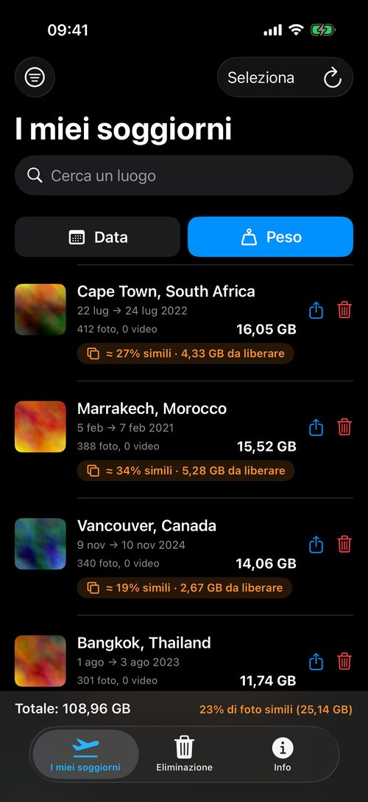
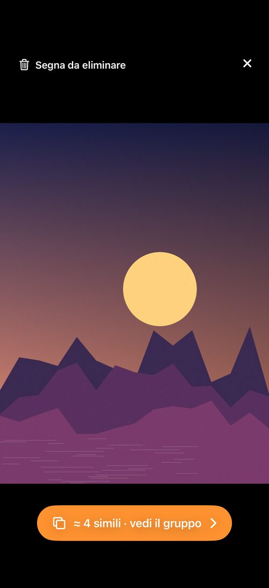
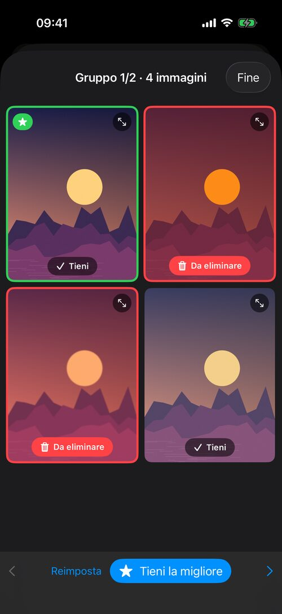
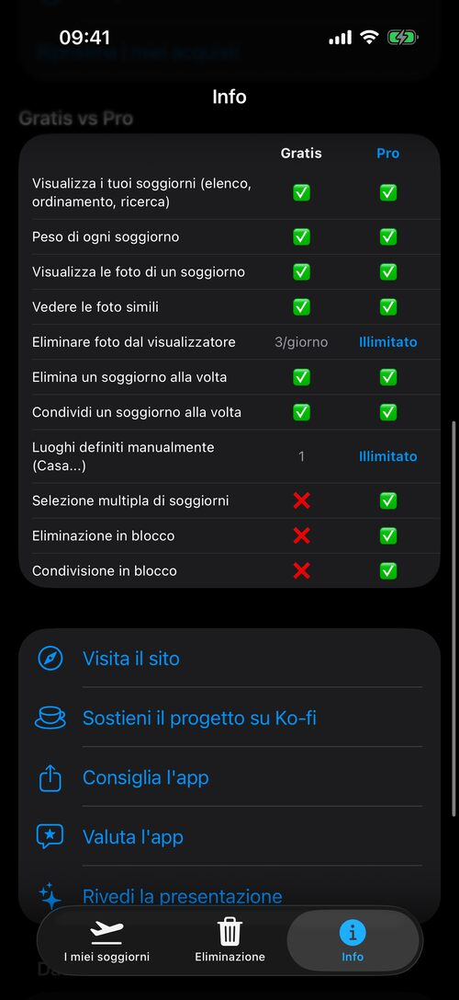

Finalmente un modo semplice per fare pulizia nei vecchi viaggi
TripSweep raggruppa le tue foto e i tuoi video per soggiorno, mostra cosa occupa spazio e quanta parte sono quasi-duplicati, poi ti lascia tenere lo scatto migliore ed eliminare il resto — senza mai inviare i tuoi dati altrove.
→ Scopri anche PhotoCull per Mac, l'app desktop che ordina le tue foto

Uno sguardo all'app



Cosa fa l'app
Raggruppamento automatico per soggiorno
Le tue foto e i tuoi video sono raggruppati per viaggio — tenendo conto sia del tempo sia del luogo, per non mescolare mai due destinazioni diverse. I soggiorni sono memorizzati sul tuo iPhone: l'elenco compare subito all'avvio, poi si aggiorna in background.
Foto simili, trovate per te
TripSweep analizza le tue foto in background, sul tuo iPhone, con il framework Vision di Apple. Ogni soggiorno mostra la quota di quasi-duplicati («≈ 27% simili · 4,3 GB da liberare») — un buon motivo per tornare a fare ordine.
Confronta e scegli la migliore
Apri un gruppo di foto simili: i ritratti affiancati, i paesaggi uno sotto l'altro, mai ritagliati. Viene suggerito lo scatto migliore (nitidezza, punteggio estetico di Apple, volti), le raffiche sono raggruppate automaticamente e i tuoi preferiti non vengono mai segnati per l'eliminazione.
La dimensione che conta
Ordina i soggiorni per data o per dimensione con un solo grande pulsante. Un piè di pagina mostra il peso totale delle tue foto e la quota di foto simili — per vedere a colpo d'occhio dove conviene fare ordine.
Visualizzatore gratuito, ordine facile
Toccare un soggiorno apre il visualizzatore — gratis. Segna da eliminare qualsiasi foto, simile o no, dalla griglia o a schermo intero; un grande pulsante apre direttamente il gruppo quando una foto ha delle simili.
Elimina senza pensarci troppo
Sempre tramite «Eliminati di recente», mai un'eliminazione definitiva immediata. La versione gratuita include 3 eliminazioni al giorno dal visualizzatore; Pro toglie il limite.
Salvalo, o invialo a chi era lì con te
Esporta un intero soggiorno sul tuo Mac o su File prima di eliminarlo, oppure condividilo direttamente (AirDrop, File...) con amici e familiari — niente va perso per sempre.
Luoghi personalizzati
Definisci i tuoi luoghi (Casa, Lavoro...) ed escludili dall'elenco per tenere solo i veri viaggi.
100% offline
Nessuna foto o posizione lascia mai il tuo iPhone. Il riconoscimento dei luoghi e il rilevamento delle foto simili funzionano interamente sul dispositivo, senza connessione, senza account, senza servizi di terze parti.
Disponibile in 5 lingue
Francese, inglese, italiano, tedesco, spagnolo — l'app si adatta automaticamente alla lingua del tuo iPhone, in verticale e in orizzontale.
La tua privacy, presa sul serio
TripSweep non raccoglie, invia o condivide mai le tue foto, i tuoi video o i tuoi dati di posizione. Tutta l'elaborazione — incluso il riconoscimento dei luoghi — avviene localmente sul tuo iPhone.
Leggi l'informativa sulla privacy completa